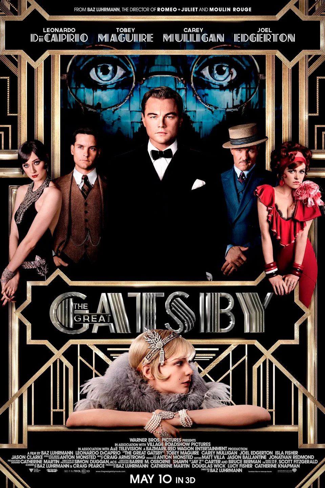
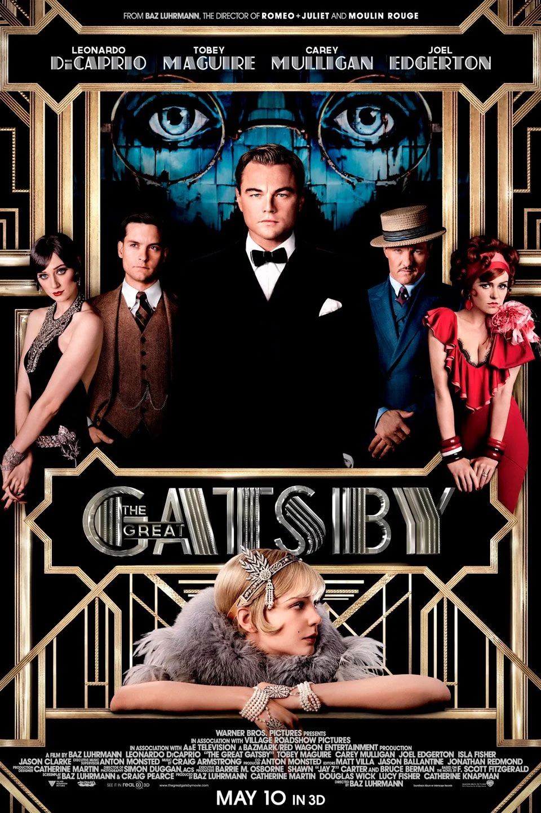

Otras de mis películas favoritas:
Además de "El Gran Showman" y "Beetlejuice", tengo más películas que forman parte de mi top 7 de favoritas y que tienen un lugar muy especial en mi corazón por la historia, los actores y actrices o la estética.
Estas películas que menciono tienen en común el ser muy "digeribles" ya que no son historias con tramas complejas que sean difíviles de ver o que no logren "enganchar" al público.
- Love, Rosie:Los personajes serán Rosie y Alex quienes desde su infancia, son los mejores amigos del mundo. Sin embargo, en los últimos días de instituto, una serie de acontecimientos los distancia anímica y físicamente. Y tendrán que enfretarse a cambios y al tiempo.
- El Gran Gatsby: El gran Gatsby de Francis Scott Fitzgerald es una novela que trata sobre Jay Gatsby es un héroe trágico que se va destruyendo conforme se acerca a su sueño: la reconquista de una mujer a la que dejó para irse a la guerra en Europa. Quiere cumplir su deseo más inaccesible: recuperar el pasado, el momento en que conquistó a Daisy Buchanan.
- Haunted Mansion (2003):Jim Evers arrastra a su familia a la enorme y espantosa mansión Gracey para reconstruirla y transformarla. Pero nada más llegar, la familia comprende que no está sola, ya que aparecen 999 macabros y burlones fantasmas deseosos de conocer gente nueva.
 
